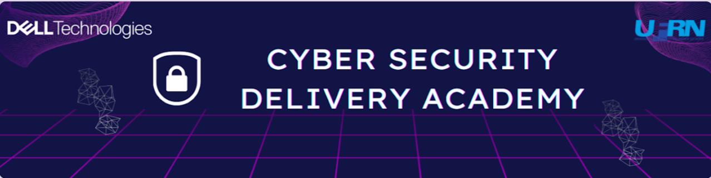
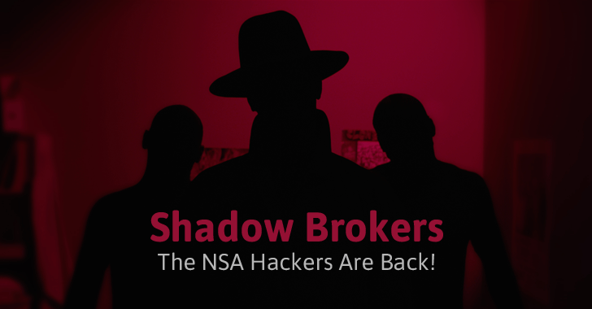
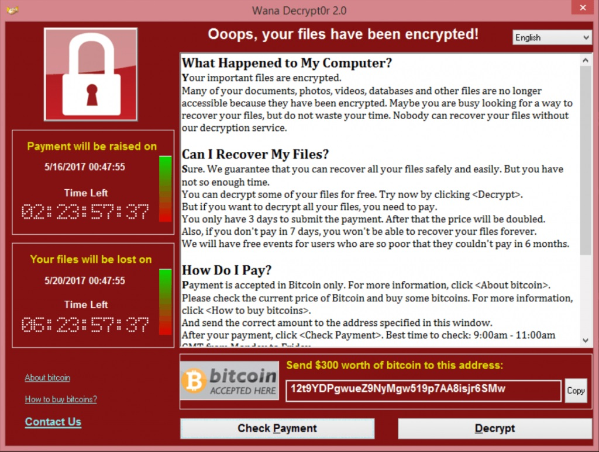
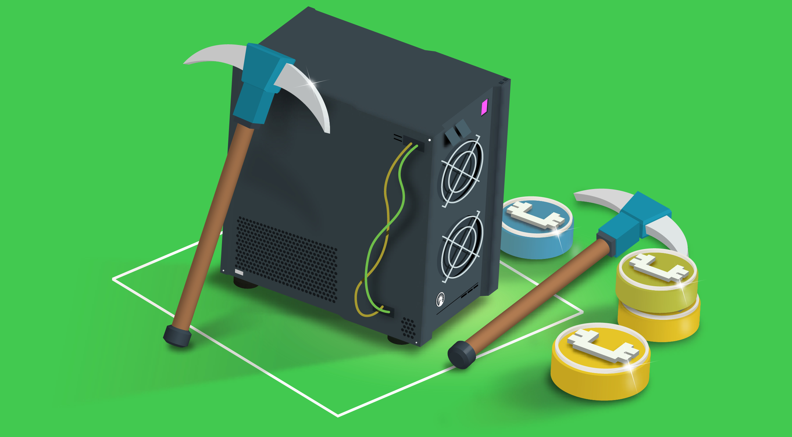

Apresentação do Módulo de Resposta a Incidentes

By Israel Hall Leighton
A História do EternalBlue: De uma arma secreta de espionagem ao caos global da cibersegurança
Origem: Uma Ferramenta da NSA
O EternalBlue não foi criado por criminosos, mas pela Agência de Segurança Nacional (NSA) dos Estados Unidos. Ele foi desenvolvido como uma sofisticada ferramenta de ciberespionagem.
- Explorava uma falha crítica no protocolo SMBv1 (Server Message Block), usado para compartilhamento de arquivos em redes Windows.
- Essa vulnerabilidade, identificada como CVE-2017-0144, permitia a execução remota de código, dando aos invasores controle total sobre a máquina afetada.
O Vazamento: Shadow Brokers

Em abril de 2017, um grupo hacker conhecido como "The Shadow Brokers" lançou uma série de ferramentas cibernéticas que alegavam ter roubado da NSA. O vazamento incluiu exploits, ferramentas de intrusão e código-fonte que antes eram de uso restrito a agências de segurança.
A identidade e os motivos exatos dos integrantes do Shadow Brokers permanecem obscuros. Algumas teorias apontam para ganho financeiro, outras para motivos políticos ou para operadores oportunistas que exploraram uma vulnerabilidade na cadeia de segurança.
- O pacote continha o código-fonte do EternalBlue, expondo-o publicamente pela primeira vez.
- A divulgação acelerou a criação de variantes maliciosas e facilitou a vida de cibercriminosos menos sofisticados.
- O grupo publicou diferentes pacotes em etapas, o que gerou picos de incidentes à medida que novas ferramentas eram analisadas e reutilizadas.
- Impacto: além do EternalBlue, o vazamento mostrou a vulnerabilidade de reter exploits sem mitigá-los, pois a disponibilidade pública transforma ferramentas de inteligência em armas de oportunidade.
O Alerta: Antes da Tempestade
A Microsoft, ciente da vulnerabilidade, havia lançado um patch de segurança para corrigir o problema. No entanto, o patch foi ignorado por muitos.
- O patch, conhecido como MS17-010, foi lançado em março de 2017, um mês antes do vazamento.
- A maioria das empresas e usuários não o aplicaram imediatamente, deixando milhões de sistemas expostos.
A Onda de WannaCry

Em maio de 2017, o WannaCry, um ransomware que se espalhava usando o EternalBlue, causou pânico global.
- Ele criptografava os arquivos das vítimas e exigia um resgate em Bitcoin.
- Atingiu mais de 200 mil computadores em 150 países, paralisando hospitais, fábricas e agências governamentais.
- O ataque só foi contido por um "kill switch" acidental, descoberto por um pesquisador de segurança.
A Ameaça de NotPetya
Um mês depois, o mundo enfrentou o NotPetya. Embora parecesse um ransomware, na verdade era um malware destrutivo.
- Usava o EternalBlue para se espalhar por redes internas.
- Seu objetivo não era pedir resgate, mas destruir os dados dos sistemas infectados de forma irreversível.
- Causou prejuízos bilionários a grandes empresas como Maersk, FedEx e Merck, evidenciando o perigo de uma guerra cibernética.
A Resposta Sem Precedentes da Microsoft
Devido à gravidade dos ataques, a Microsoft tomou uma medida drástica e rara:
- Lançou um patch de emergência para sistemas operacionais antigos, como o Windows XP, que já estavam fora de suporte.
- Essa ação destacou a seriedade da vulnerabilidade e a necessidade de uma resposta imediata para proteger a infraestrutura global.
O Exploit Vive

Mesmo com os patches disponíveis, o EternalBlue ainda é uma ameaça nos dias de hoje.
- Ele continua sendo utilizado, especialmente para mineração de criptomoedas em computadores e servidores sem a atualização de segurança.
- Seus alvos são redes legadas e sistemas que não podem ser atualizados facilmente, provando que uma falha pode ser perigosa por anos.
Lições Aprendidas
- Aplicação Rápida de Patches: A velocidade em que vulnerabilidades críticas são corrigidas é vital para a defesa.
- O Perigo das Falhas Zero-Day: A posse de exploits por agências governamentais pode ser uma faca de dois gumes, com o risco de vazamentos catastróficos.
- Risco de Protocolos Legados: A confiança em tecnologias antigas e não seguras (como o SMBv1) é uma porta de entrada para ataques em larga escala.
O Legado Duradouro
O EternalBlue se tornou um dos maiores marcos da história da cibersegurança.
- Ele provou a fragilidade das infraestruturas digitais globais.
- Funcionou como um alerta severo para empresas e governos investirem em segurança proativa, não apenas reativa.
Conclusão
O EternalBlue é um exemplo claro de como uma arma cibernética estatal pode se transformar em uma ferramenta de destruição global. A história nos mostra que a segurança digital é uma responsabilidade compartilhada e que a vigilância constante é a única maneira de nos protegermos de ameaças que evoluem rapidamente.